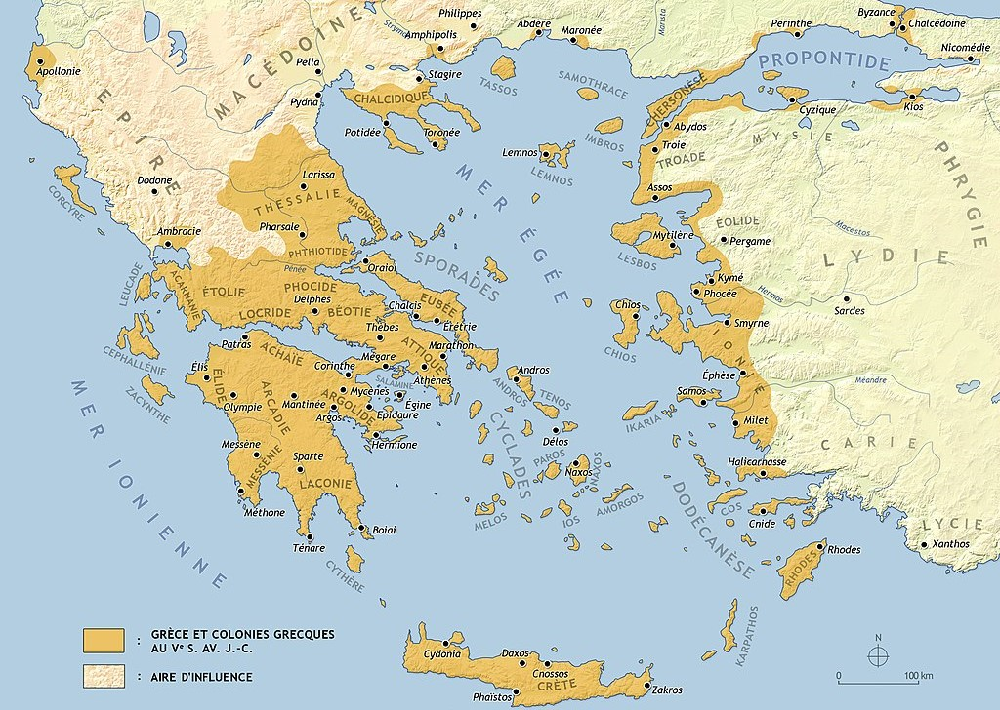

L'Apogee du Monde Grec
Entre 510 et 323 avant J.C. environ, la civilisation grec s'étend de plus en plus grâce à ses colonies. Elle connut aussi de nombreux développements dans différents domaines:
Les territoires grecs au 5ème siècle avant J.C.
La Politque
A cette époque, deux politiques se distiguaient, celle de Sparte et celle d'Athènes.
La Politique Spartiate
La Philosophie
La philosophie était déjà présente pendant l'époque archaïque, mais ce n'est qu'à partir de l'époque classique qu'elle commence à prendre une place importante dans certain cité notamment à Athènes, avec plusieurs philosophes célèbres comme:
-
Platon(424-347 avant J.C.) est un philosophe grec d’Athènes. Disciple de Socrate, il rédige une série de dialogues mettant en scène celui-ci. On trouve dans les dialogues tardifs tels que la République, la célèbre doctrine platonicienne des Idées, qui distingue deux réalités ; le monde sensible, celui que nous voyons et le monde intelligible, ou monde des Idées. Il fut vendu comme esclave par le tyranDenys de Syracuse, puis libéré. Il fonda une école, l’Académie, etAristotefut son disciple.Source: France Culture et Les Philosophe.fr -
La justice de l'intelligence est la sagesse. Le sage n'est pas celui qui sait beaucoup de choses, mais celui qui voit leur juste mesure.
-Platon -
Socrate(470-399 avant J.C.) était un homme de la parole philosophique en cette époque du «siècle de Périclès». Il féconda toutes les pensées d'Occident, Socrate fit de l’intelligence l’instrument d’une quête méthodique de la vérité. Son enseignement, propagé par les dialogues dePlaton, fut si déterminant que la vie de l’esprit en fut à jamais transformée.Source: Larousse et Wikipédia -
L'écriture ne peut saisir le savoir, car le savoir, contrairement à l'information, n'existe pas en dehors de l'homme.
-Socrate -
Aristote(384-322 avant J.C.) est un philosophe grec. Disciple de Platon, il prend ses distances avec la pensée de celui-ci et fonde une école, le Lycée. Sa soif de savoir est immense : il s’intéresse à plusieurs disciplines, comme la logique, l’éthique, la politique, la physique, etc. et pose les premiers fondements de certaines d’entre elles. Il fut précepteur d’Alexandre le Grand. Son œuvre a eu une grande postérité, et a été transmise par la tradition arabe puis chrétienne.Source: Wikipédia et Les Philosophe.fr -
Etre heureux ne signifie pas que tout est parfait. Cela signifie que vous avez décidé de regarder au-delà des imperfections.
-Aristote
L'Architecture
Pendant cette période, de nombreux édifices furent construits. Parmis ces sites célèbres il y a:
-
L'
Acropole, qui présente certains des monuments les plus célèbres d'Athènes:Le Parthénon

Construit entre 477 et 432 avant J.-C.,c e bâtiment est l'édifice principal de l'ensemble architectural de l'
Acropole, en plus d'être le plus grand symbole de la beauté de l'architecture classique de la Grèce antique. Il a été érigé sur un ancien temple datant du VIe siècle avant J.C., connu sous le nom d'Hécatompédon. Celui-ci avait été détruit par lesPerses. Ce monument, construit en marbre blanc issu de lamontagne Pentélique, a été conçu pour abriter lastatue d'Athéna Parthénos.Statue d'Athéna Parthénos
Cette statue est la plus célèbre des statues grecque qui fut créée par Phidias, représentant la déesse
Athéna, elle mesure 12 mètres de haut et fut conçue en or et en ivoire. La statue possède un bouclier avec un serpent caché derrière. Elle tient également la déesseNikédans sa paume.L'Érechthéion
Ce temple était peu ordinaire. Il était consacré à
Athéna Polias, mais aussi à Cécrops, le mythique fondateur d'Athènes, à son filsÉrechthéeet même àPoséidon, qui avait affronté Athéna pour devenir la divinité de la cité. Ce temple était divisé en plusieurs sections. La partie orientale renfermait une statue consacrée à Athéna, tandis que la portion ouest appartenait à la fois à Poséidon et à Érechthée.Le Temple d'Athéna Nikè
Bati sur les vestiges de fortification de l'époque myvénienne, ce temple fut détruit lors des
guerres médiqueset il fut reconstruit pendant laguerre de Péloponèse. Dans la mesure où le nom d'Athéna Nikèsignifie "Athéna de la victoire", il a probablement été érigé dans l'espoir qu'Athènes remporte la guerre. Contrairement à la plupart des temples ornés d'œuvres d'inspiration mythologique, celui-ci présente des scènes de batailles historiques contre les Perses.
-
Beaucoup de ces lieux étaient érigés pour honorer certains ou plusieurs dieux de la
Mythologie Grecque, car celle-ci tenait une place primordiale pour les Grecs. On peut citer des temples et des sanctuaires:Le Temple d'Apollon de Delphes
Il existait beaucoup de temples d'Apollon en Grèce, mais ce temple faisait partie du sanctuaire de Delphes, à Phokis et était l'un des temples les plus importants et les plus significatifs dédiés à
Apollon. Dans la Grèce antique, ce temple servait de siège à laPythie, également connue sous le nom d'Oracle de Delphes, la Pythie était la grande prêtresse du temple d'Apollon à Delphes, elle livrait des prophéties à tous ses visiteurs.Le Temple d'Artémis à Éphèse

Considérée comme l'une des sept merveilles du monde antique grâce à sa taille et à la richesse de ses décoration, ce temple fut construit pour honoré la déesse
Artémisvers 560 avant J.C., parThéodore de Samos,ChersiphronetMétagénèset financé par le roiCrésus de Lydie. Il fut malheureusement détruit et incendié, puis reconstruit à plusieurs reprises pendant le IVème siècle avant J.C.Le Temple de Zeus à Olympie
Érigé entre 470 et 456 avant J.C. conçu par Libon d'Élis, le fronton représente la préparation de la course de chars entre
PélopsetŒnomaos. Le thème de la course de chars dans l'histoire de Pélops convient à Olympie, car elle renvoie à une victoire surPisa. Ce temple abritait l'une des sept Merveilles du monde antique : la statue de Zeus. À la clôture des jeux Olympiques, une procession se rendait au temple, où les athlètes victorieux étaient couronnés.Héraion d'Argos
Ce sanctuaire était dédié à la déesse
Héra, situé à proximité de Mycènes. En son sein, on pouvait trouver deux temples qui sont consacrés à la déesse, un de l'époque Archaïque qui fut construit au VIIème siècle. Cependant il fut incendié en 423 avant J.C. L'autre temple fut achevé en 410 avant J.C. pendant l'époque classique et abrite une magnifiquestatue d'Héra.
-
Et des statues :
Le colosse de Rhodes
Cette gigantesque statue qui demandera 12 années de construction, mesurait 31 mètres de haut et était faite de bronze. Elle fut construite à l’entrée du port de Rhodes vers 300 avant J.C. par le sculpteur grec Charès de Lindos. Cette statue fut érigée en commémoration de la résistance qu'on eut les Rhodiens face au siège de
Demetrios, un ancien GénéralAlexandre le Grand.La statue de Zeus à Olympie

Cette statue créée en 436 avant J.C. L'une des sept merveilles du Monde antique. Il s'agit d'une statue chryséléphantine, ce qui signifie qu'elle était faite d'ivoire et d'or. Son constructeur était Phidias, un sculpteur athénien connu pour d'autres sculptures. Elle fut érigée à Olympie dans le temple de
Zeuspour l'honorer pendant lesJeux Olympiques.
{kind=link}